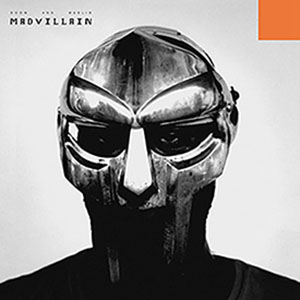
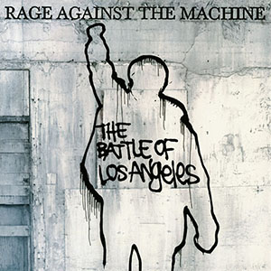
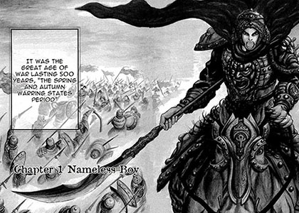

MF DOOM is one of my favorite Hip-Hop artists and he really made me a fan of the genre. He has a unique abstract lyrical style that I don't think any other artist has been able to replicate fully, and many prevalent artists take inspiration from him. It inspires me to just let my ideas flow and run wild instead of trying to create things that are fake and not me.

Rage Against the Machine is one of my favorite American rock bands because they emphasize using their music as a platform for activism. The lyrics in their music shaped a lot of my current day views and motivates me to keep fighting for change and making things better.

Yasuhisa Hara is the manga author of the series called "Kingdom" which is one of my favorite manga. The series started in 2006 and is over 800 chapters long, still releasing weekly chapters today. I love the amount of detail in his art style and it amazes me how he has been able to make detailed drawings weekly while telling an engaging story for 20 years now. It motivates me to try and put out my best work over long periods of time.